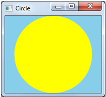

After you create your graphics resources, you are ready to draw.
The Circle program performs very simple drawing logic:

Because the render target is a window (as opposed to a bitmap or other offscreen surface), drawing is done in response to WM_PAINT messages. The following code shows the window procedure for the Circle program.
LRESULT MainWindow::HandleMessage(UINT uMsg, WPARAM wParam, LPARAM lParam)
{
switch (uMsg)
{
case WM_PAINT:
OnPaint();
return 0;
// Other messages not shown...
}
return DefWindowProc(m_hwnd, uMsg, wParam, lParam);
}
Here is the code that draws the circle.
void MainWindow::OnPaint()
{
HRESULT hr = CreateGraphicsResources();
if (SUCCEEDED(hr))
{
PAINTSTRUCT ps;
BeginPaint(m_hwnd, &ps);
pRenderTarget->BeginDraw();
pRenderTarget->Clear( D2D1::ColorF(D2D1::ColorF::SkyBlue) );
pRenderTarget->FillEllipse(ellipse, pBrush);
hr = pRenderTarget->EndDraw();
if (FAILED(hr) || hr == D2DERR_RECREATE_TARGET)
{
DiscardGraphicsResources();
}
EndPaint(m_hwnd, &ps);
}
}
The ID2D1RenderTarget interface is used for all drawing operations. The program's OnPaint method does the following:
The BeginDraw, Clear, and FillEllipse methods all have a void return type. If an error occurs during the execution of any of these methods, the error is signaled through the return value of the EndDraw method. The CreateGraphicsResources method is shown in the topic Creating Direct2D Resources. This method creates the render target and the solid-color brush.
The device might buffer the drawing commands and defer executing them until EndDraw is called. You can force the device to execute any pending drawing commands by calling ID2D1RenderTarget::Flush. Flushing can reduce performance, however.
While your program is running, the graphics device that you are using might become unavailable. For example, the device can be lost if the display resolution changes, or if the user removes the display adapter. If the device is lost, the render target also becomes invalid, along with any device-dependent resources that were associated with the device. Direct2D signals a lost device by returning the error code D2DERR_RECREATE_TARGET from the EndDraw method. If you receive this error code, you must re-create the render target and all device-dependent resources.
To discard a resource, simply release the interface for that resource.
void MainWindow::DiscardGraphicsResources()
{
SafeRelease(&pRenderTarget);
SafeRelease(&pBrush);
}
Creating a resource can be an expensive operation, so do not recreate your resources for every WM_PAINT message. Create a resource once, and cache the resource pointer until the resource becomes invalid due to device loss, or until you no longer need that resource.
Regardless of what you draw, your program should perform a loop similar to following.
If the render target is a window, step 2 occurs whenever the window receives a WM_PAINT message.
The loop shown here handles device loss by discarding the device-dependent resources and re-creating them at the start of the next loop (step 2a).
DPI and Device-Independent Pixels
Â
Â